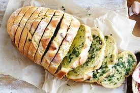

My favourite bread ever!
 |
And god said let there be breadUtilizamos cookies para mejorar su experiencia en el sitio web. Este sitio web emplea cookies que le ofrecen anuncios personalizados y realizan un seguimiento de su uso del sitio web. |
|  | What else could he have saidBread always falls on the buttered side. Al hacer clic en ‘Continuar’, o al seguir haciendo uso del sitio web, acepta nuestro uso de las cookies. Puede modificar su configuración de cookies en cualquier momento. |
No way on earthBread is the staff of life. Al hacer clic en ‘Continuar’, o al seguir haciendo uso del sitio web, acepta nuestro uso de las cookies. Puede modificar su configuración de cookies en cualquier momento. |
Facebook
Twitter
Instagram